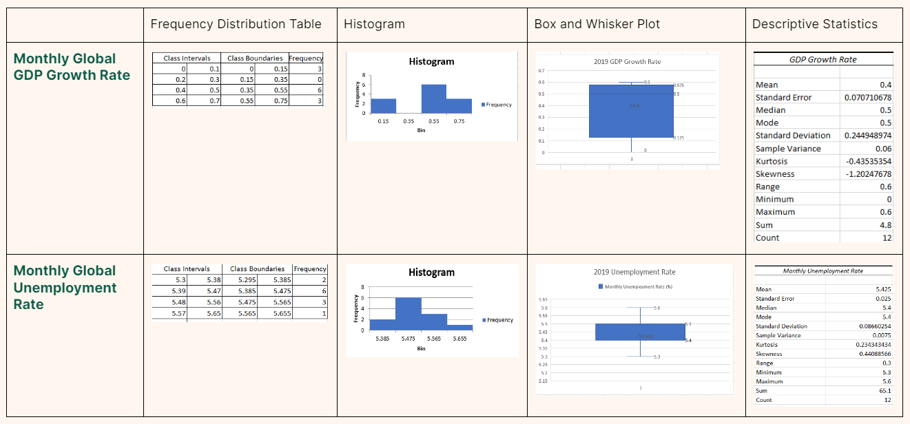

2019
Quantitative Variables

The mean for the 2019 Monthly Global GDP Growth Rate is 0.4, and the mode is 0.5. Based on the Box and Whisker Plot, the 1st Quartile is 0.125, the median 0.5, and the 3rd Quartile is 0.575. It is negatively skewed or skewed to the left. The standard deviation is 0.244948974, and there are no outliers.
We can infer that the average GDP Growth Rate in 2019 is 0.4. This is because the mean is the best to consider as the average since there are no outliers. The standard deviation being very low in value tells us that there hasn’t been much changes in the GDP Growth Rate throughout this year.
The mean for the 2019 Monthly Global Unemployment Rate is 5.425, and the mode is 5.4. Based on the Box and Whisker Plot, the 1st Quartile is 5.4, the median is also 5.4, and the 3rd Quartile is 5.5. It is positively skewed or skewed to the right. The standard deviation is 0.08660254, and there are no outliers.
We can infer that the average Unemployment Rate in 2019 is 5.425. This is because the mean is the best to consider as the average since there are no outliers. The standard deviation being very low in value tells us that there hasn’t been much changes in the unemployment rate throughout this year.